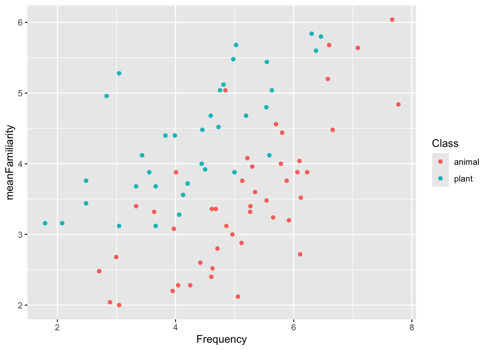

“The simple graph has brought more information to the data analyst’s mind than any other device.” — John Tukey
1.2 Why visualize?
“Visualization is a fundamentally human activity. A good visualization will show you things you did not expect or raise new questions about the data. A good visualization might also hint that you’re asking the wrong question or that you need to collect different data. Visualizations can surprise you, but they don’t scale particularly well because they require a human to interpret them.” – R4DS
1.3 Datasaurus dozen
── Attaching core tidyverse packages ──────────────────────── tidyverse 2.0.0 ──
✔ dplyr 1.1.4 ✔ readr 2.1.5
✔ forcats 1.0.0 ✔ stringr 1.5.1
✔ ggplot2 3.5.1 ✔ tibble 3.2.1
✔ lubridate 1.9.3 ✔ tidyr 1.3.1
✔ purrr 1.0.2
── Conflicts ────────────────────────────────────────── tidyverse_conflicts() ──
✖ dplyr::filter() masks stats::filter()
✖ dplyr::lag() masks stats::lag()
ℹ Use the conflicted package (<http://conflicted.r-lib.org/>) to force all conflicts to become errors
Datasaurus was created by Alberto Cairo, library(datasauRus)
1.4 Datasaurus dozen
Datasaurus was created by Alberto Cairo
1.5 ggplot2
Figure 2
1.6 Using ggplot2
Google Colab already has ggplot2 installed by default. There is no need to run install.packages().
library(ggplot2)
1.7 Why ggplot2?
“R has several systems for making graphs, but ggplot2 is one of the most elegant and most versatile. ggplot2 implements the grammar of graphics, a coherent system for describing and building graphs. With ggplot2, you can do more and faster by learning one system and applying it in many places.” – R4DS
1.8 ggplot2’s grammar of graphics
Figure 3
1.9 Today’s data: ratings
Subjective frequency ratings, ratings of estimated weight, and ratings of estimated size, averaged over subjects, for 81 concrete English nouns. – languageR
Create this figure showing the relationship between actual frequency and subjective frequency rating of each word, considering the class the word belongs to
2 The basic ggplot
Using your data
define how variables in your dataset are mapped to visual properties (aesthetics)
determine the geometrical object that a plot uses to represent data (geom)
2.1 1 data
Use ratings data
ggplot(data = ratings )
2.2 2 aesthetic mapping
Map Frequency to x-axis and meanFamiliarity to y-axis.
When a categorical variable is mapped to an aesthetic, ggplot2 will automatically assign a unique value of the aesthetic (here color) … a process known as scaling. – R4DS
ggplot(data = ratings,mapping =aes(x = Frequency, y = meanFamiliarity,color = Class ) ) +geom_point()

3.2 Global vs. local aesthetics
globally in ggplot(), which are passed down to all geoms
locally in geom_*() which are used by that geom only
Remember: When a categorical variable is mapped to an aesthetic, ggplot2 will automatically assign a unique value of the aesthetic (here color) … a process known as scaling. – R4DS
There are many. We will start with these, and add a few additional geoms as we move through the course:
geom_histogram()
histogram, distribution of a continuous variable
geom_density()
distribution of a continuous variable
geom_bar()
distribution of a categorical data
geom_point()
scatterplot
geom_smooth()
smoothed line of best fit
7.2geom_histogram()
A histogram divides the x-axis into equally spaced bins and then uses the height of a bar to display the number of observations that fall in each bin. – R4DS
Imagine a histogram made out of wooden blocks. Then, imagine that you drop a cooked spaghetti string over it. The shape the spaghetti will take draped over blocks can be thought of as the shape of the density curve. – R4DS